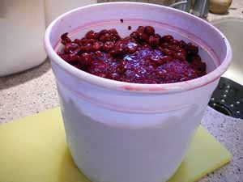
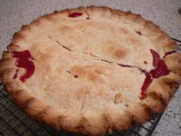

Another cherry pie
We are huge fans of cherry pie in our family; it’s my son Calvin’s favorite dessert and he chooses it for his birthday “cake” every year. I remember being asked at the age of 8 or 9 in Sunday school what my favorite food was (I have no idea how that tied into a Sunday school lesson) and answering unhesitatingly “Cherry pie!” I’m pretty sure it was my father’s preferred dessert as well – my dad has always hated cake – and in those days Mom made her cherry pie with jars of Musselman’s cherry pie filling. I always got the jar after she had scooped the filling into the pastry so I could scrape out all the delicious residue with a teaspoon. Imagine how much more I could have gotten if we had had such a thing as a rubber spatula in our house! We are more sophisticated now and use fresh cherries when we can get them but I think Dad still harbors a fondness for the old Musselman’s in his heart.
As I have said before, you cannot make a cherry pie with sweet cherries; you must use tart cherries, and they are only in season for a short time. I have never seen them frozen in any grocery store here in Pittsburgh. For Easter dinner this year I tried a recipe that used frozen sweet cherries mixed with blackberries, called Winter Cherry Pie, but I thought it was terrible and the sweet cherries were just too, well, sweet for pie. If you hunt for them you can find canned tart pie cherries, not to be confused with canned cherry pie filling, which is cherries mixed with gloppy, oversweetened goop. You want to make the sweetened goop yourself, that way you can control how sweet it is. We like ours on the tarter side. Expect the cans to be expensive, about $3.50/can, at least, and you need two cans for a pie. I have already given that recipe, here .

Alert and helpful reader Mary, of the beautifully written blog, Ceres and Bacchus told me about a fruit orchard out in Michigan called Treemendous Fruits that ships their products all over the country. I do realize this is the opposite of eating locally, but cherry pie with fresh frozen tart cherries! Already washed and pitted! I lost no time in emailing them and soon heard back from a nice lady named Nancy. A 10-pound bucket of cherries cost $33 plus shipping, which seemed pretty reasonable to me given how expensive even canned cherries are. Here’s a photo of the bucket, which arrived still partially frozen (they don’t pack it in anything but layers of newspaper and just ship it regular UPS). Nancy told me the cherries can be refrozen with no loss of quality. At first I was just going to bung the whole thing in the freezer but then decided that I really needed to not be lazy and should divide it up into pie-size amounts in freezer bags. I measured out about 5 cups into each bag, with juice, and got 4 bags out of the bucket. That’s when I realized that these were going to be some pretty expensive pies – $33, plus $10 handling, plus the UPS charge; you do the math. Thanks, honey and keep working those three jobs!
I decided to make a pie that very night but ran into another dilemma; I’ve made fresh cherry pies and canned cherry pies, but what do you do with frozen cherries and an unspecified amount of juice? I really didn’t want to throw any of that expensive juice away, either. I actually found a recipe in a book I have called Mary Meade’s Country Cookbook, by Ruth Ellen Church for Cherry Pie (Frozen Cherries) which she says is Charlie Church’s favorite pie. This isn’t a bad little cookbook and has a wonderful fluffy buttercream frosting in it made with a cooked meringue.
Cherry Pie (Frozen Cherries) six servings

- 2 cans (20 oz. each) frozen cherries (I don’t know where she is getting these but I wish I did; my bag did weigh about 40 oz., though)
- juice from thawed cherries, about 1 1/4 cups
- 3 tablespoons cornstarch
- 1 cup sugar
- 1 tablespoon butter
- 1/4 teaspoon salt
- 1/4 teaspoon almond extract (I prefer vanilla)
- few drops red food coloring (optional)
- pastry for 9-inch double crust pie (I baked mine in a 10-inch pie plate)
Defrost cherries until juice will drain away leaving fruit firm and slightly icy. Mix cornstarch with a small amount of cherry juice to make a thin paste. Slowly add remaining juice and cook while stirring until thickened and clear. Remove from heat; add sugar, butter, salt, extract, and coloring. Let cool. Fold sauce into cherries just before turning into pastry-lined pie plate. Arrange top crust over filling (may use lattice crust if desired). Bring lower crust up over top crust and flute. Bake pie at 425º F. for 40 minutes. Cool before serving. NOTE: This pie was very saucy and I served it in bowls; the sauce was delicious.
Comments
Expensive but money well spent. Sounds like a nice way to celebrate Calvin’s birthday and I’ll bet that many years from now he’ll still remember these pies.
Sometimes local farmstands will get cherries from
Michigan in July. They are pitted and not frozen.
At least we get em that way in the Cleveland area.
You place your order and they call you when they
come in. Some times I drain the juice and make
granita.
One time my sister and I found a cherry tree in
the woods near the house where we grew up in
Greentree. We picked the cherries and made a
pie, creating an annual desire for sour cherry pie.
Pie in the valley!
Friend of Ted
Your cherry pie picture has me seriously drooling – as I’m writing I swear my mouth is watering, isn’t that one of those strange things about the body? Anyway, your pie looks great and my mother told me that if you want some more of those cherries, just give me your address and she can send you some without that 10 dollar handling fee. She also agreed that the cherries can thaw and be frozen again without any problem.
Mary and Julie, I just found your comments in our over-zealous spam filter; sometimes it just works too hard!
Julie, it wasn’t actually Calvin’s birthday, but I agree, he will remember my pie and it kind of makes me feel sorry for his future wife. His birthday’s in July and I think I was able to make a fresh cherry pie for him last summer.
Rick, I never thought I’d say I wished I lived in Cleveland, but now I do! Our farmstands definitely do not sell pitted cherries.
Mary, that’s sweet of your mom, and maybe I’ll take you (or her) up on that come fall. I think by the time I use up what I just got it will be too hot to ship frozen cherries. The Tree-Mendous folks seemed to think it wouldn’t be a good idea once the weather warmed up.
Add a comment